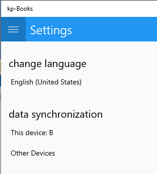
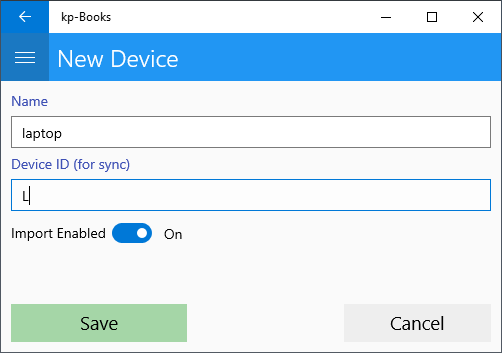

If you are going to run the application on multiple devices and want the data to be synchronized, then each device must be uniquely identified by a letter. For example, the mobile phone could have the letter 'A' and the desktop computer the letter 'B'. Device ID can be changed from "Settings" - "Data Sync" - "This Device"
From the "Settings" menu - "Other devices" you can add a description and an identifier for other devices with which you want to synchronize.
